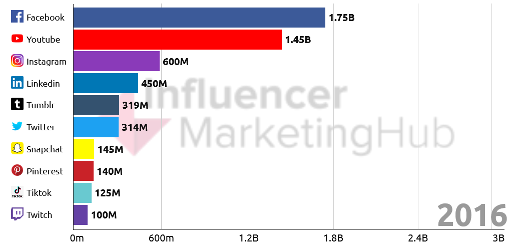

What’s TikTok
TikTok, known as “Douyin” in its home market, is the most popular social media apps in the world, was launched in China in September 2016. It quickly started to gain traction in China and parent company ByteDance launched an international version the following year.
Originally launched as a short-form video-sharing platform, primarily for lipsyncing and dancing videos, TikTok has grown into a fully-fledged video service, with content available for all types of viewers.
The roots of Education are bitter but the fruit is sweet
(This Aristotle’s quote symbolizes that with patience and dedication we can achieve great things in life even if we need to endure some pain along the way sadly that's not the mentality people have nowadays because of social media and specifically TikTok we've got used to receiving rewards fast and instant we going to get our fix of constant cheap instant dopamine).
Our brains love stimulation, especially when it requires the least amount of energy to get it and TikTok is programmed strictly for this when you open TikTok it immediately recommends a video that is usually very flashy has Quick Cuts music different sound effects some type of story and similar stimulating effects all this is designed to quickly capture your attention and bombard your brain with dopamine rewards.
The endless stream of short fast-paced videos that offer instant and constant gratification is leading to shorter attention spans and other negative issues, today's we are more distracted than ever, and we are now seeing what is described as TikTok brain in teens with the rise of social media the human attention band keeps getting shorter and shorter.
Today it's now at its lowest point, it's surpassed the average attention span of a human which is 8.25 seconds, long all social media platforms impact our Focus negatively but one platform, in particular, poses a severe problem not only to our attention but to our mental health as a whole and that's TikTok.
TikTok users
There are currently one billion users worldwide, more than 100 million in the United States and 23 million in the UK.
TikTok is banned in nine countries: China, India, Iran, Pakistan, Afghanistan, Jordan, Indonesia, Bangladesh, and the USA. on various grounds, including the promotion of indecency and cyberbullying. Douyin, the Chinese version of TikTok, is the only permitted version in China. In response to the Russian invasion of Ukraine in 2022, TikTok has banned new Russian posts and live streams.
(Due to the Russian invasion of Ukraine TikTok has banned Russia)
TikTok is most popular with teenage aged 13 to 24yo who account for 67% of users and the majority are females. the second largest group is aged 24 to 34, representing 25% of users. Across all age groups, the female/male split is approximately 60%/40%.

TikTok popularity
TikTok stands out from the competition with an extraordinary rate of growth. Between 2018 and 2022, the network attracted an average of 340 million new active members per year. After hitting the one billion user mark sparked by the Covid-19 pandemic, TikTok overtook Instagram for the number of users in 2021. The platform's user base is expected to reach 2 billion by 2024 when growth is projected to have slowed.
(Despite a very marked slowdown in its growth in recent years, Facebook is expected to remain the biggest social network).


TikTok addiction
For most people, TikTok is a harmless distraction from everyday life but for others, it can become as addictive.
Dr. Julia Albright, digital sociologist, and lecturer at the University of Southern California (USC), explains that TikTok has adopted the same principles that have made gambling addictive. In psychological terms, it’s known as ‘random reinforcement’ (sometimes you win, sometimes you lose – just like a slot machine) which is how platforms like TikTok are designed.
Dr. Albright says that in a sense she got addicted to TikTok the first time she used it. She started watching 15 seconds videos one afternoon and totally lost track of time:
When you’re scrolling … sometimes you see a photo or something that’s delightful and it catches your attention. And you get that little dopamine hit in the brain … in the pleasure center of the brain. So, you want to keep scrolling
It’s not just watching video content that causes the brain to release good-feeling neurochemicals such as dopamine and serotonin, when a TikTok user gets a like, comment, share, save, view, or follow, it can release the same feelings of euphoria.
Over time the brain becomes reliant on this type of stimulation to induce pleasure and it needs more and more TikTok videos and engagement to get the same rush of excitement.
Undoing the damage done to the brain because of TikTok and other social media addictions can take months to correct and even lead to addiction.
Conclusion
In conclusion, TikTok addiction is a growing concern among users, as it can lead to negative effects such as social isolation, lack of sleep, and decreased productivity. While the app's algorithm and the pressure to be constantly connected to social media can contribute to addiction, there are also ways to manage it.
Setting limits on the amount of time spent on the app, finding healthier hobbies and activities, and seeking professional help if necessary, can all help to address this problem. Remember, the key is moderation and being aware of your usage. It's important to use these platforms in a healthy way to fully benefit from the positive aspects they can bring. It's important to be aware of the risks and take steps to manage them if necessary.